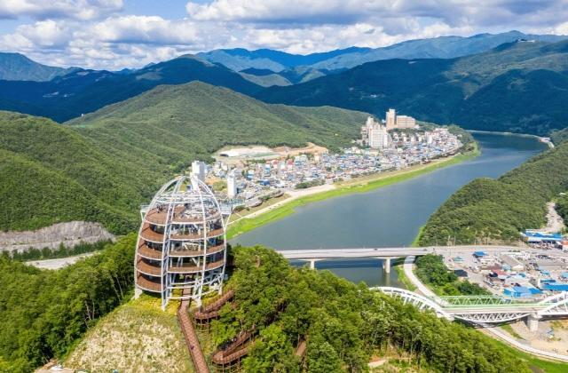

ESTP 추천 여행지
충청북도 단양
추천 이유
하늘과 땅을 넘나드는 극한의 스릴 충청북도 단양은 하늘과 땅을 넘나드는 스릴 넘치는 액티비티가 즐비하여 ESTP의
모험심을 끊임없이 자극하는 곳입니다 . 직접 몸을 던져 얻는 짜릿한 경험을 선호하는 ESTP에게
패러글라이딩과 아찔한 스카이워크는 완벽한 자극제가 됩니다 .
순발력이 뛰어나고 즉흥적인 즐거움을 잘 찾아내는 ESTP는 단양의 압도적인 스케일과 스릴 속에서
최고의 만족감을 얻습니다 .
추천 여행 코스
- 만천하스카이워크
- 단양 다누리 아쿠아리움
- 단양 패러마을

만천하스카이워크
남한강 절벽 위에 세워진 전망대로, 유리 바닥 위를 걸으며 단양의 절경을 한눈에 감상할 수 있는 명소입니다. 스릴 있는 체험과 함께 굽이치는 강과 산의 풍경을 동시에 즐길 수 있어 단양을 대표하는 관광지입니다.
단양 다누리 아쿠아리움
단양강과 민물 생태계를 중심으로 다양한 수중 생물을 전시한 아쿠아리움입니다. 교육적인 전시와 체험 공간이 함께 마련되어 있어 가족 단위 방문객들에게 특히 인기 있는 장소입니다.
단양 패러마을
단양의 대표 패러글라이딩 체험 장소로, 하늘에서 단양의 산과 강을 내려다볼 수 있는 액티비티 명소입니다. 초보자도 안전하게 체험할 수 있으며, 짜릿한 경험과 함께 탁 트인 절경을 감상할 수 있습니다.